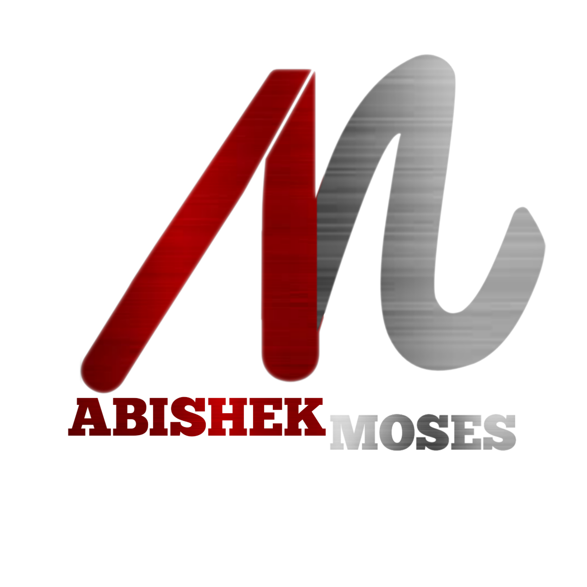

Adobe Photoshop
Image editing, retouching and visual adjustments.
CREATIVE SERVICES / 02
Exploring everyday moments through composition, mobile photography and thoughtful image editing.
OVERVIEW
Photography is one of my creative interests. My current practice includes mobile photography, learning DSLR photography, and editing images with Photoshop and PicsArt, with AI-assisted enhancement where appropriate.
I focus on the subject, framing, light and the final treatment while continuing to develop my photography skills.

Image editing, retouching and visual adjustments.
Creative image edits and mobile workflows.
Assisted image enhancement and experimentation.
Mobile photography and ongoing DSLR learning.


LET'S MAKE A FRAME